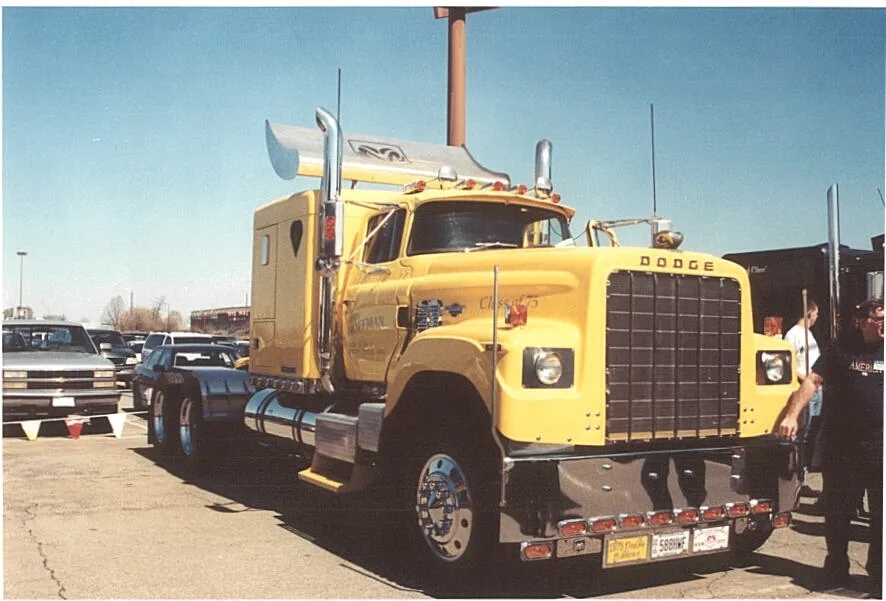

La pregunta parece tener una respuesta sencilla: Dodge dejó de fabricar camiones. Pero mezcla dos historias separadas por más de treinta años. En Estados Unidos, Chrysler retiró a Dodge del mercado de camiones pesados en 1975 y del de medianos en 1977. Las pickups livianas, en cambio, continuaron y terminaron bajo una marca propia: Ram, separada de Dodge en 2009. No hubo un único día en que desaparecieran todos los vehículos de trabajo con ese nombre.
Entender la diferencia importa tanto para la historia como para identificar un repuesto. Un tractor Dodge Bighorn de los setenta, un C-800 mediano y una pickup Dodge Ram de los dos mil pertenecen a segmentos y generaciones distintas. Sus piezas no se vuelven equivalentes por compartir una palabra en la parrilla.
Antes de la retirada: Dodge también construía camiones grandes
La memoria popular suele asociar Dodge con autos y pickups, pero su trayectoria comercial empezó mucho antes de Ram. La historia oficial de la marca registra la producción de camiones comerciales y militares en sus primeros años. Con el tiempo, el catálogo estadounidense incluyó vehículos de trabajo de diferentes tamaños, desde camionetas hasta modelos medianos y pesados.
En la etapa final de los pesados aparecieron distintas configuraciones de cabina. El Dodge C-800 de la portada pertenece a la familia de cabina adelantada LCF: su frente se abre para dar acceso al motor, algo visible en la unidad restaurada de la fotografía. El Bighorn, por el contrario, era un tractor de trompa larga. Eran productos para tareas y compradores distintos, no dos nombres del mismo camión.

1975 y 1977: la decisión de Chrysler
La evidencia más clara sobre las fechas aparece en un informe histórico conservado por el Departamento de Transporte de Estados Unidos. En su apartado sobre los vehículos comerciales de Chrysler, el documento señala que la empresa abandonó el mercado pesado en 1975 y el mediano en 1977 para concentrarse en los camiones livianos, que eran muy rentables para la compañía.
Ese dato permite explicar la retirada sin convertirla en un misterio mecánico. La razón documentada es una prioridad de negocio: concentrar recursos en el segmento que ofrecía mejores resultados. Los cambios en costos, competencia y demanda de la década pueden haber formado parte del contexto, pero el informe no permite atribuir la decisión exclusivamente a una crisis de combustible, una ley particular o una supuesta falla de todos los modelos. Presentar una sola de esas hipótesis como causa definitiva sería ir más lejos que la evidencia.
También conviene ser preciso con el alcance geográfico. La fecha describe la salida de esos segmentos en Estados Unidos. No demuestra que cada camión Dodge existente dejara de circular, ni que los mercados de otros países siguieran exactamente el mismo calendario. Los ejemplares conservados y restaurados, como los de las fotografías, son un recordatorio de esa diferencia entre dejar de fabricar y desaparecer de la ruta.
Las pickups Dodge no se fueron con ellos
Mientras cesaban las líneas medianas y pesadas, Chrysler mantuvo su negocio de vehículos livianos. Es precisamente hacia allí donde el informe sitúa el foco de la empresa. Décadas más tarde, la denominación Dodge Ram todavía aparecía en las pickups: la cronología oficial de Dodge menciona, por ejemplo, el lanzamiento de la Dodge Ram 1500 de 2002.
Por eso resulta incorrecto decir que Dodge dejó de fabricar todas las camionetas en 1977. Lo que terminó entonces fue su participación estadounidense en los camiones de mayor porte. La historia de las pickups continuó y tuvo suficiente importancia comercial como para recibir, años después, una identidad de marca propia.
2009: de Dodge Ram a Ram
El segundo cambio ocurrió en octubre de 2009. El grupo separó Dodge y Ram para que cada división pudiera centrarse en sus compradores. La historia oficial de Dodge lo describe expresamente como dos divisiones independientes, y un comunicado de aniversario de Ram fecha el nacimiento de la marca autónoma en ese mes.
La consecuencia más visible fue el nombre: la pickup que antes se conocía como Dodge Ram pasó a presentarse como Ram. No significa que en 2009 se cancelara la producción de pickups, ni que la marca Dodge entera cerrara. Dodge continuó orientada a otros vehículos; Ram se enfocó en pickups y comerciales. En comunicaciones de Ram para Argentina también se explica esa separación como una manera de atender las demandas de los compradores de camionetas.
Esta separación tampoco fue el regreso del Bighorn. Que una Ram moderna se anuncie como Heavy Duty no la convierte en el mismo tipo de tractor pesado de carretera que Dodge había dejado de ofrecer en 1975. La palabra “pesado” puede usarse en contextos comerciales diferentes; para comparar vehículos hay que mirar su categoría, aplicación y configuración concretas.
Entonces, ¿por qué “desaparecieron”?
Si hablamos de camiones medianos y pesados Dodge en EE. UU., desaparecieron de la oferta nueva porque Chrysler decidió concentrarse en los livianos. La retirada se completó en dos etapas: 1975 para los pesados y 1977 para los medianos, según el informe estadounidense.
Si hablamos de las pickups con emblema Dodge, el fenómeno fue distinto: la familia siguió, pero a partir de 2009 se consolidó bajo la marca Ram. En ese caso desapareció el nombre Dodge del frente de las pickups nuevas, no el producto ni el negocio de camionetas.
Las dos decisiones responden a prioridades empresariales, pero no deben comprimirse en un único relato de fracaso. La salida de un segmento industrial en los setenta y la organización de marcas en 2009 son hechos distintos, con más de tres décadas de distancia.
Qué mirar hoy al buscar piezas para un Dodge clásico
Para un taller o transportista argentino, una búsqueda por “camión Dodge” puede mezclar vehículos sin relación técnica directa. Antes de cotizar conviene registrar modelo exacto, año, número de chasis, motor, transmisión y configuración de ejes. En unidades históricas también importa comprobar si la pieza instalada sigue siendo original o fue sustituida durante una restauración o adaptación.
Una foto del frente ayuda a reconocer la familia, pero no alcanza para confirmar compatibilidad. El C-800 de la portada es una unidad restaurada; un Bighorn conservado puede haber recibido cambios a lo largo de su vida. Y una Ram actual pertenece a otra historia. La identificación técnica precisa evita pedir un componente incorrecto y ayuda a preservar camiones que todavía forman parte de la memoria del transporte.
En una línea
Los camiones Dodge medianos y pesados dejaron de ofrecerse en Estados Unidos por una decisión estratégica de Chrysler en 1975 y 1977; las pickups siguieron y, desde 2009, viven bajo la marca Ram. Eso es lo que realmente hay detrás de la pregunta.